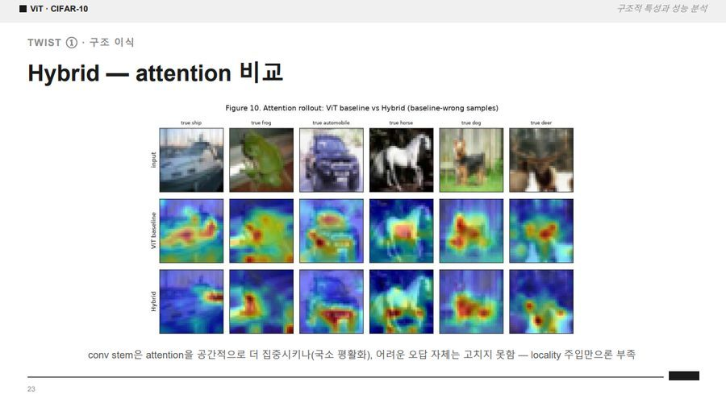
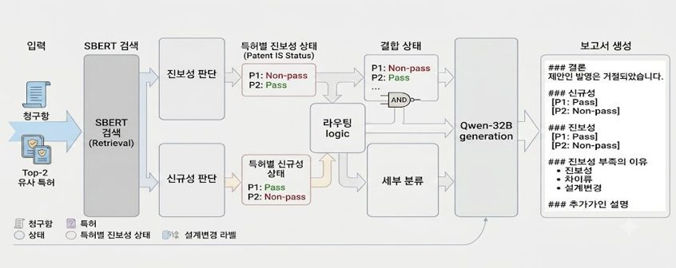
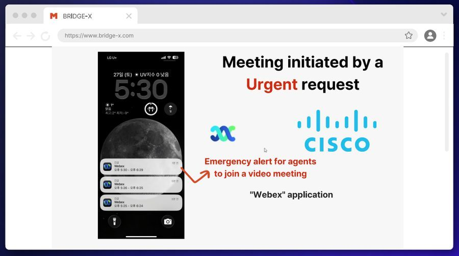
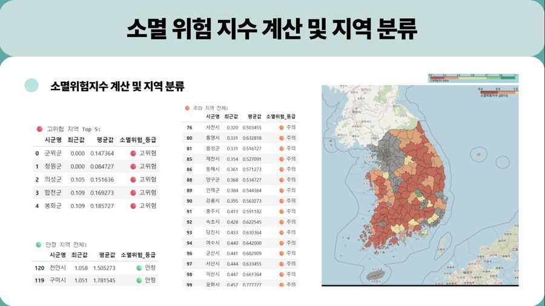
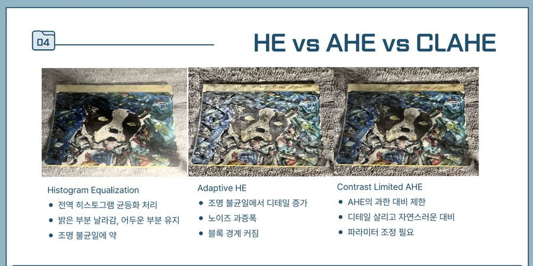
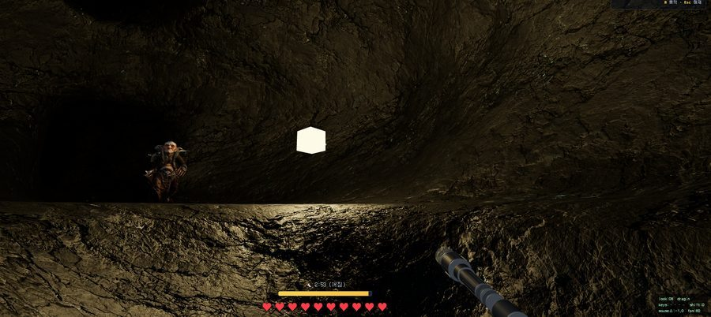

Genesis Real2Sim — Physics-Grounded Driving Policy
Flagship · Python · Genesis
Genesis 물리엔진 위에서 MPPI가 2048개 롤아웃으로 채굴한 골든 제어 라벨로 Path→(Steer, Throttle, Brake) Mapper를 학습. Real2Sim–Sim2Real 정책 전이로 확장하는 연구 프로젝트.
Genesis 물리엔진 위에서 MPPI가 2048개 롤아웃으로 채굴한 골든 제어 라벨로 Path→(Steer, Throttle, Brake) Mapper를 학습. Real2Sim–Sim2Real 정책 전이로 확장하는 연구 프로젝트.

Patch size·capacity·Hybrid CNN+ViT 구조 변형이 성능에 미치는 영향을 직접 실험·플롯으로 근거화한 분석 리포트.

특허 문서 텍스트마이닝으로 학습 데이터를 구축하고, S-BERT와 Qwen을 각각 파인튜닝해 선행기술 검색 → 등록/거절 판단 → 거절 사유 분류 → 설명 생성까지 전 파이프라인을 end-to-end로 직접 설계·구현.

Google Gemini 기반 AI 챗봇과 Webex 연동으로 분쟁지역 청소년을 상담사와 연결하는 플랫폼 (NestJS). Cisco 주관 프로젝트 3위 수상.
YouTube 영상 신뢰도를 감정 분석·편향 감지·콘텐츠 분류로 평가하는 AI 검증 플랫폼. 실시간 분석 파이프라인 구현.

지역 소멸 위험 요인을 회귀 모델로 분석한 빅데이터프로그래밍 프로젝트.

OpenCV 없이 NumPy·PIL만으로 Laplacian Pyramid 블렌딩을 구현 — edge mask로 윤곽만 자연스럽게 합성.

빛이 자원이자 위험이 되는 1인칭 절차적 복셀 동굴 탈출 게임. 브라우저에서 바로 플레이 가능.